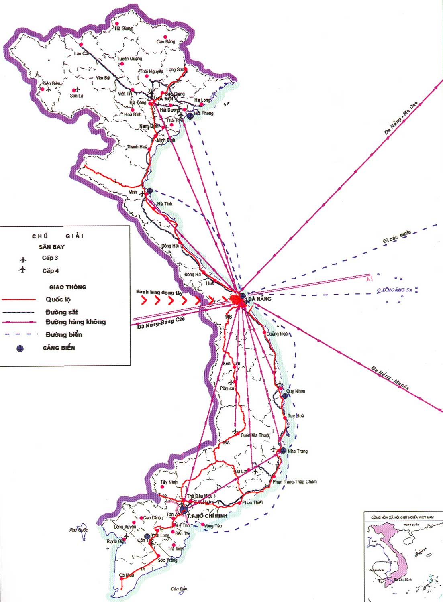

Tổng quan về Đà Nẵng
Trong lịch sử dân tộc, Đà Nẵng được biết đến không chỉ là một thành phố cảng lớn nhất miền Trung Việt Nam mà còn là một địa danh gắn liền với công cuộc mở mang bờ cõi Đại Việt từ nhiều thế kỉ trước. Dấu vết của một cửa ngõ giao lưu quốc tế gắn liền với xứ Đàng Trong vẫn còn, và trong dư ba của lịch sử, đây là một tiền đồn quan trọng trong công cuộc chống ngoại xâm của hai cuộc kháng chiến thần thánh vừa qua.

| Vị trí địa lý | |
|---|---|
| Thành phố Đà Nẵng gồm vùng đất liền và vùng quần đảo trên biển Đông. Vùng đất liền nằm ở 15055' đến 16014' vĩ độ Bắc, 107018' đến 108020' kinh độ Đông, Bắc giáp tỉnh Thừa Thiên - Huế, Tây và Nam giáp tỉnh Quảng Nam, Đông giáp Biển Đông. Vùng biển gồm quần đảo Hoàng Sa nằm ở 15045’ đến 17015’ vĩ độ Bắc, 1110 đến 1130 kinh độ Đông, cách đảo Lý Sơn (thuộc tỉnh Quảng Ngãi, Việt Nam) khoảng 120 hải lý về phía Nam. Nằm ở vào trung độ của đất nước, trên trục giao thông Bắc - Nam về đường bộ, đường sắt, đường biển và đường hàng không, cách Thủ đô Hà Nội 764km về phía Bắc, cách thành phố Hồ Chí Minh 964 km về phía Nam. Ngoài ra, Đà Nẵng còn là trung điểm của 4 di sản văn hoá thế giới nổi tiếng là cố đô Huế, Phố cổ Hội An, Thánh địa Mỹ Sơn và Rừng quốc gia Phong Nha - Kẻ Bàng | |
| Diện tích tự nhiên | |
| Thành phố Đà Nẵng có diện tích tự nhiên là 1.283,42 km2; trong đó, các quận nội thành chiếm diện tích 241,51 km2, các huyện ngoại thành chiếm diện tích 1.041,91 km2. | |
| Dân số các quận | |
| Quận Hải Châu | 8000 Người |
| Quận Liên Chiểu | 8000 Người |
| Quận Sơn Trà | 8000 Người |
| Quận Cẩm Lệ | 8000 Người |
| Quận Ngũ Hành Sơn | 8000 Người |
| Quận Thanh Khê | 8000 Người |
| Huyện Đảo Hoàng Sa | 8000 Người |
| Huyện Hòa Vang | 8000 Người |